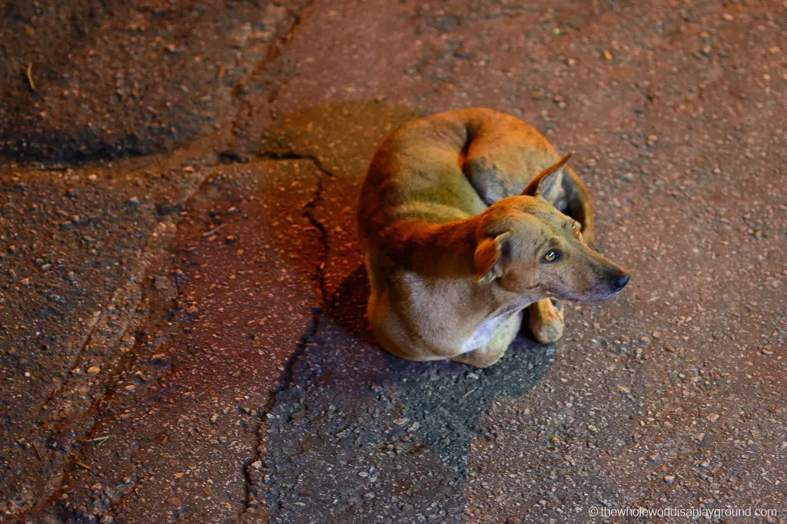

DoggieHaven Times City Campus Room No.316, Shop House No.2, Times City Complex, Kamayut Township, Yangon. Call Now : +959 960 623 563, +959 234 445 555 Mail To : doggiehaven@gmail.com
Stray dogs in Myanmar: it’s a dogs life! |
|
|
February 15, 2021 |
|
|  | |
|
After a close encounter with a very crazy cat in a Bangkok train station I’m a little apprehensive in countries with lots of strays and where rabies is a possibility. Myanmar fitted the bill on both counts and I was slightly nervous ahead of our visit. For all you Myanmar trip planners, here’s the low down on our experiences with the strays and the tips we used to avoid any incidents. Are there many stray dogs in Myanmar?In short, YES! We came across hundreds of strays during our two week trip. It’s heartbreaking to see so many dogs, many with bad limps as a result of road accidents, on the hunt for some food and some affection. The hardest part was not being able to adopt every single one we came across. Tips for dealing with stray dogs in MyanmarDuring our Myanmar travels we picked up some tips from the locals on how to interact with the dogs. It worked for us!Mind where you are walking and be careful not to stand on the tails of the dogs. They’re often baked out asleep in markets and on footpaths so it’s important to watch your step.Avoid dark streets at night or any alleys where you can be surrounded by strays. Don’t carry food. The dogs are mostly after their next meal! Our experiences with the stray dogs in Myanmar:While the dogs mostly lounged in the sun there were a few occasions when we had slightly too close for comfort encounters with the strays although all was well in the end!We had an early morning stop at Indein Village during our Inle Lake dawn boat trip. We were the only tourists at the site and unfortunately this meant that we were the sole object of the strays attention. It started off fine with just one large dog following us around initially. One became two, two became three and three became four… When I turned around and there was a line of 5 dogs behind me, following my every move I’d had enough and called it a day. While initially they backed off with the stamp of a foot and a brisk tripod swoop in their direction, their confidence grew with their headcount and we didn’t want to risk getting bitten. The moral of the story?Despite being numerous the strays in Myanmar are mostly harmless and it’s easy to avoid any awkward situations with the stray dog population by being aware of where you’re walking. If you’re concerned about the dogs our best advice is to stay alert and mind your step! Our biggest problem was our broken hearts at not being able to do very much to help them. |
DoggieHaven Times City Campus Room No.316, Shop House No.2, Times City Complex, Kamayut Township, Yangon. Call Now : +959 960 623 563, +959 234 445 555 Mail To : doggiehaven@gmail.com